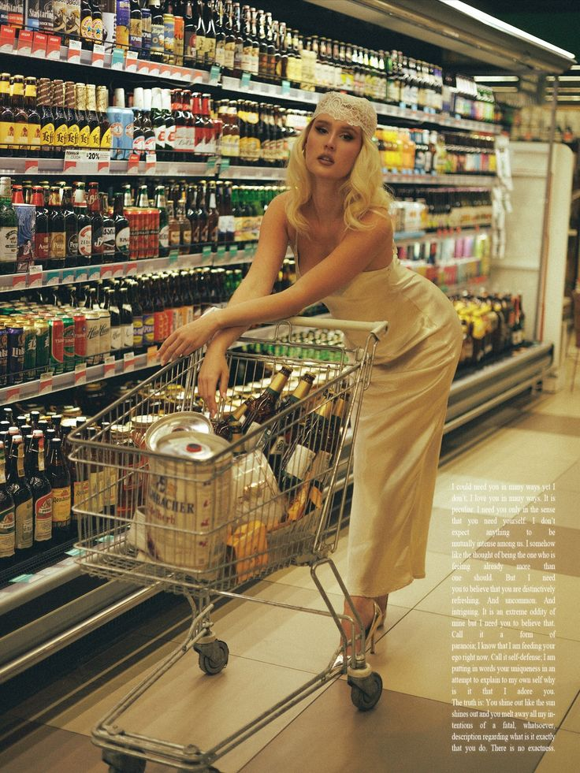
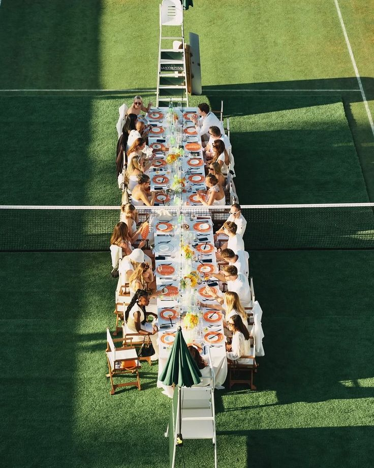
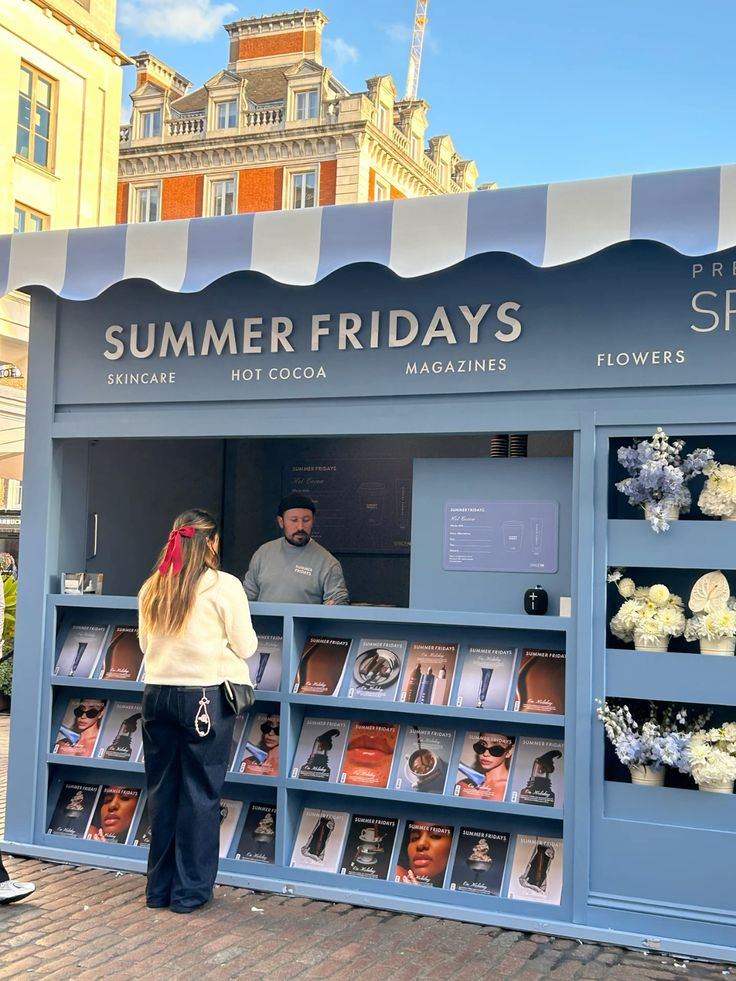
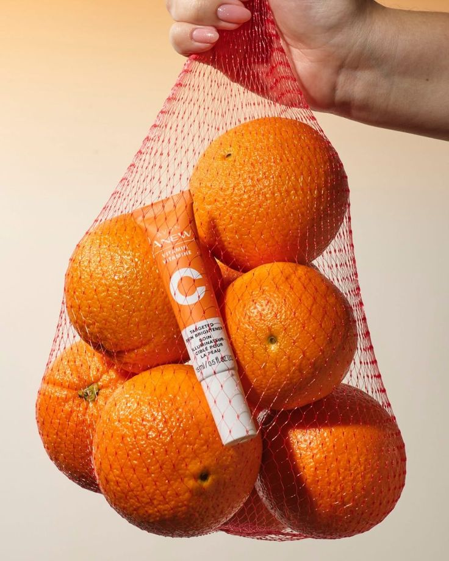

… de mode, nous lancerions notre collection dans une laverie automatique.
Image : Pinterest.
Lire l'idéeUn produit. Un lieu que personne n'attend. Des concepts, pas des événements réalisés, mais nous les ferions dare-dare. Les images sont des références trouvées sur Pinterest, créditées sous chaque idée.
… de mode, nous lancerions notre collection dans une laverie automatique.

… de champagne, nous lancerions notre cuvée dans une épicerie de nuit.

… de lunettes de soleil, nous vendrions notre collection comme des barres chocolatées, dans une station-service rétro.

… de sport, nous lancerions notre collection dans un club de tennis vintage.

… de food, nous lancerions notre produit dans un kiosque à journaux.

… de joaillerie, nous lancerions notre collection dans une boulangerie.

… de cosmétique, nous lancerions notre produit au milieu des fruits et des légumes.

… de skincare, nous lancerions notre gamme dans un hammam à Marrakech.